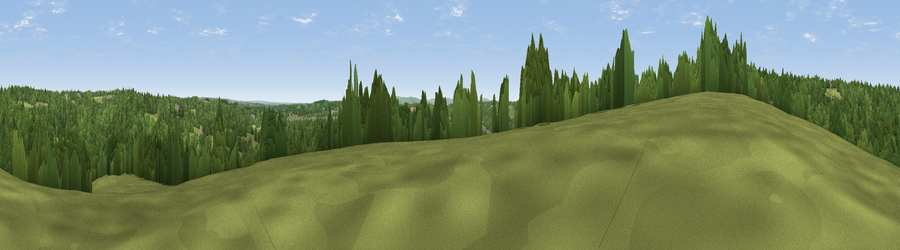

Viewpoint near Handcross
#33999 in England · top 61% of its area beats it · near HandcrossWhere it is
The exact computed spot (TQ 26925 29225). Click the marker for map links.
The view, rendered

A 360° render of this exact spot computed from the terrain model, tree cover and land cover — summer colours, afternoon light, calibrated against photographs of famous viewpoints. Real trees, hedges and buildings will differ in detail.
The panorama
Grey silhouette: terrain skyline in each direction (720 bearings, Earth curvature and refraction included). Dashed green: skyline with trees (+15 m) and buildings (+8 m) as obstacles. Blue strip: how far the ground is visible on each bearing.
Where the view opens
Wedge length = distance to the farthest visible ground on that bearing (vegetation-aware). Rings at 10, 25 and 50 km.
What fills the view
55% woodland · 39% grassland · 5% cropland ·
Angular shares of the visible panorama (visual magnitude), not map area. Landscape diversity 0.39 (0–1 Shannon).
Key numbers
More beautiful places nearby
The staircase of upgrades: each row has a higher view potential than everything closer. Driving times are estimates from straight-line distance, calibrated against real road routing — check an actual route before setting out.
| Place | Direction | Drive | Score |
|---|---|---|---|
| Viewpoint near Handcross | NE · 2 km | ~5 min | 49.2 |
| Viewpoint near Balcombe | E · 3 km | ~7 min | 49.7 |
| Viewpoint near Turners Hill | NE · 7 km | ~15 min | 49.9 |
| Viewpoint near Turners Hill | NE · 10 km | ~19 min | 51.6 |
| Viewpoint near Kingsfold | WNW · 11 km | ~21 min | 55.0 |
| Wolstonbury Hill | S · 15 km | ~27 min | 79.6 |
| Viewpoint near Westmeston | SSE · 17 km | ~30 min | 81.1 |
| Ditchling Beacon | SSE · 17 km | ~30 min | 81.8 |
51.04836, -0.19065 · source: screening · position refined by local search. Computed location — check access rights before visiting.